ux design research
A Collection of UX Research Projects and Coursework
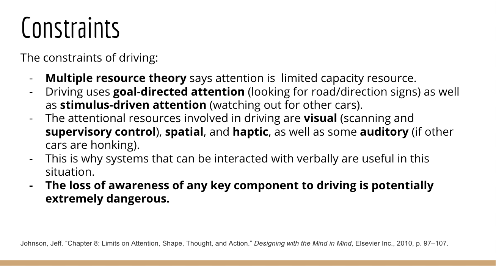
Student Housing Survey and UX Report
In a team of 5, we pulled data from a student survey to better understand how students find housing and how they feel about the process, to inform design ideas for a new student housing app.
Our main research questions were:
- What is the current housing search experience like?
- Is there a way to improve the experience of searching for off-campus housing? If so, how?
We found that the most important features the student housing application could have were “search” and “filter” features that pulled data from a wide variety of resources through a single platform — reducing the number of individual sources a student has to sift through, and increasing satisfaction with the housing search long term.
UX Assessment of Waze App
My team and I analyzed this application in terms of potential problems and their implications, then presented possible solutions.
Topics covered: thumb zone, salience, non-intuitive icons, divided attention, feedback, discovery & affordances, information scent, backup avoidance, goal state, and gamification.
Rapid Prototyping
I worked with a team for 15 minutes to quickly design elements of a map application using UX principles and heuristics.
We discussed attention capture, foveal vision, pop-out effects, metaphor, convention, salience, goal-oriented search, bottom-up vs. top-down processing, and visual texture, and developed sketches connecting specific design elements to the principles behind them.
Project Gallery
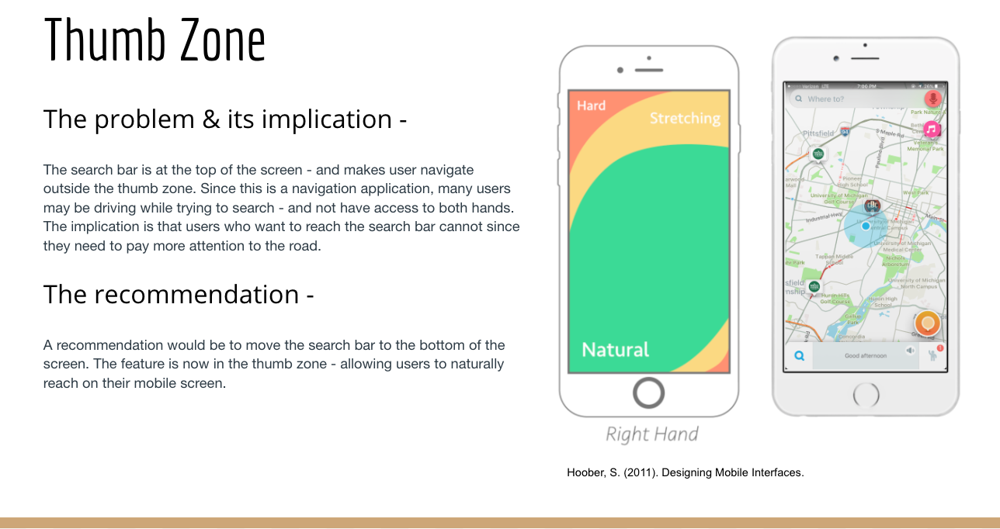
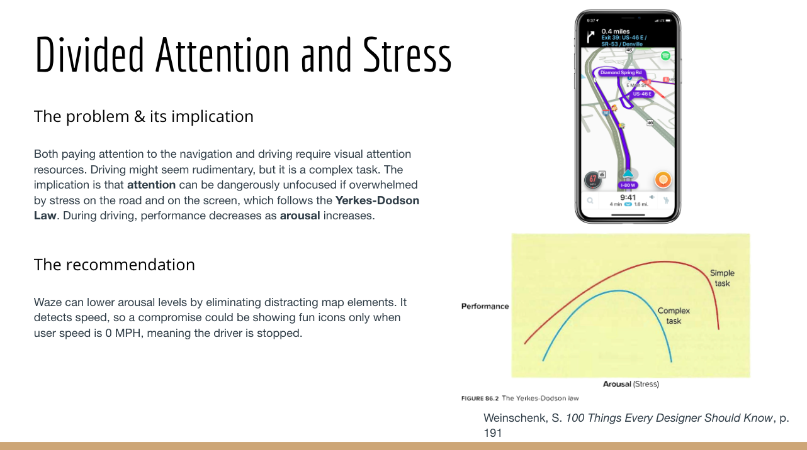
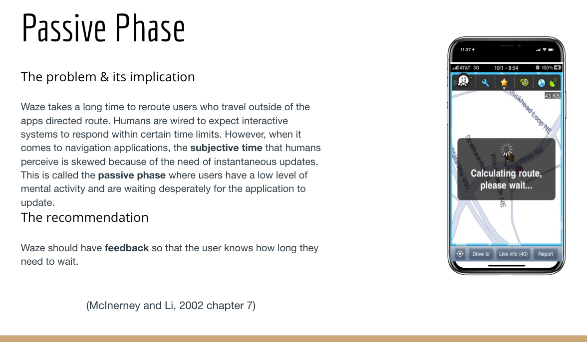
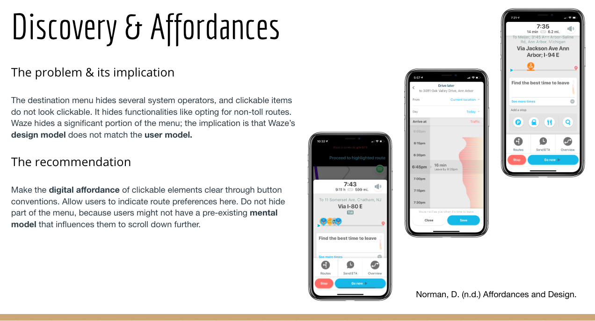
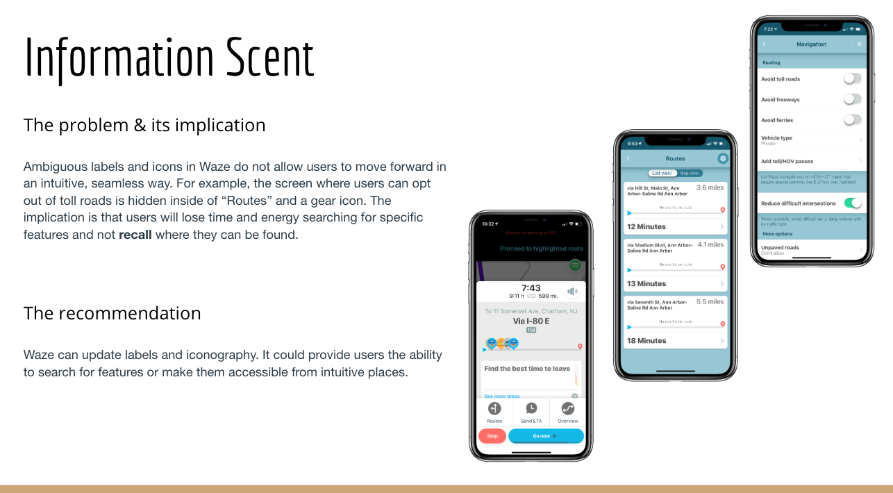
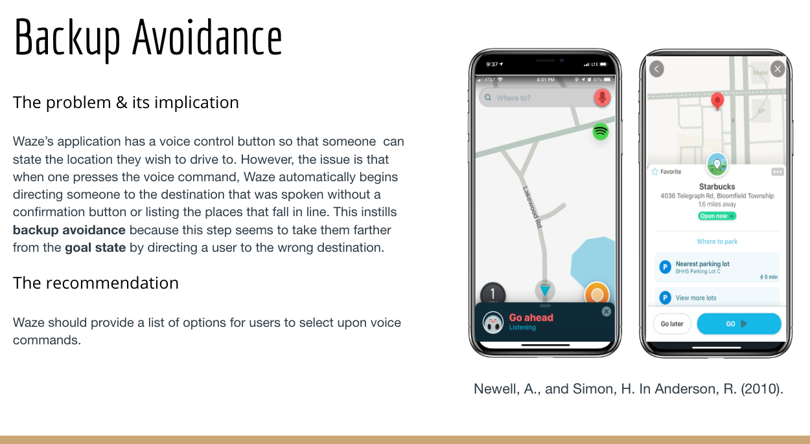
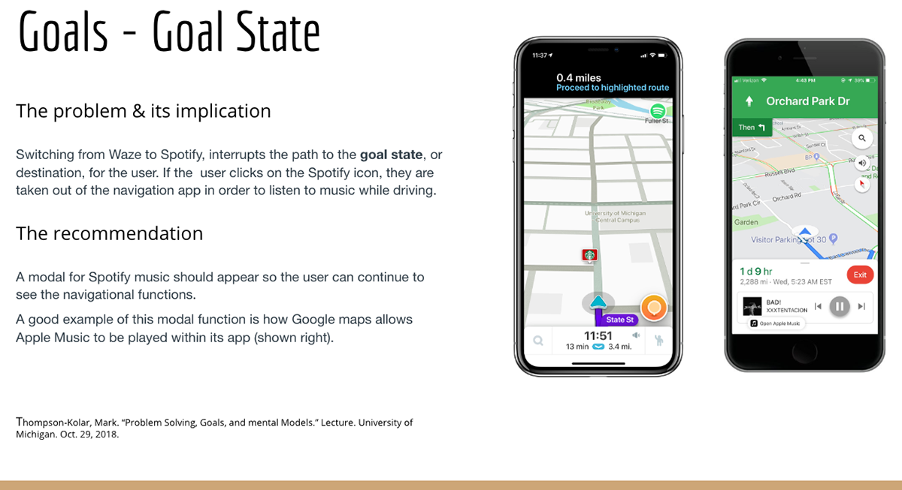
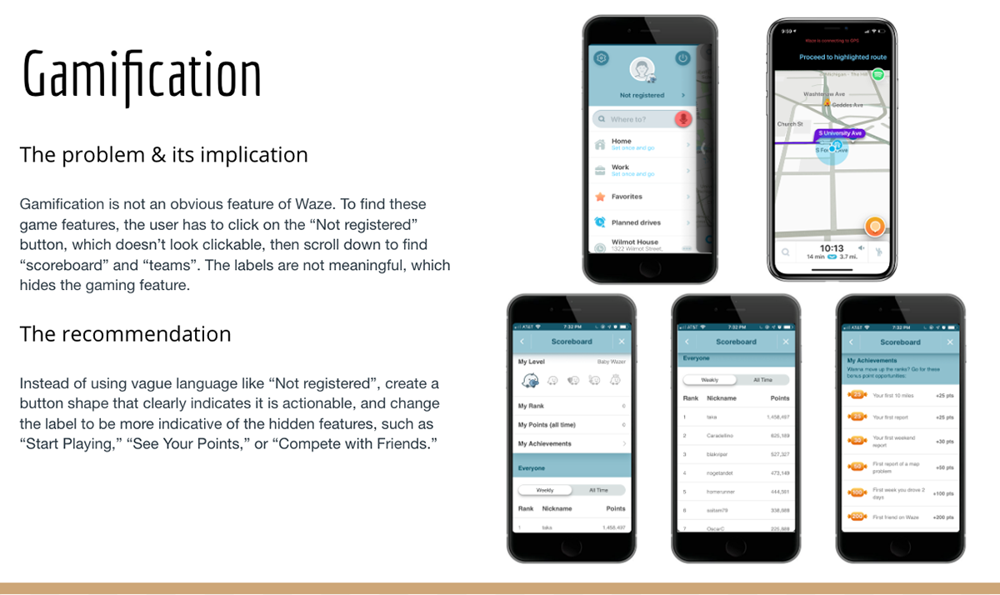
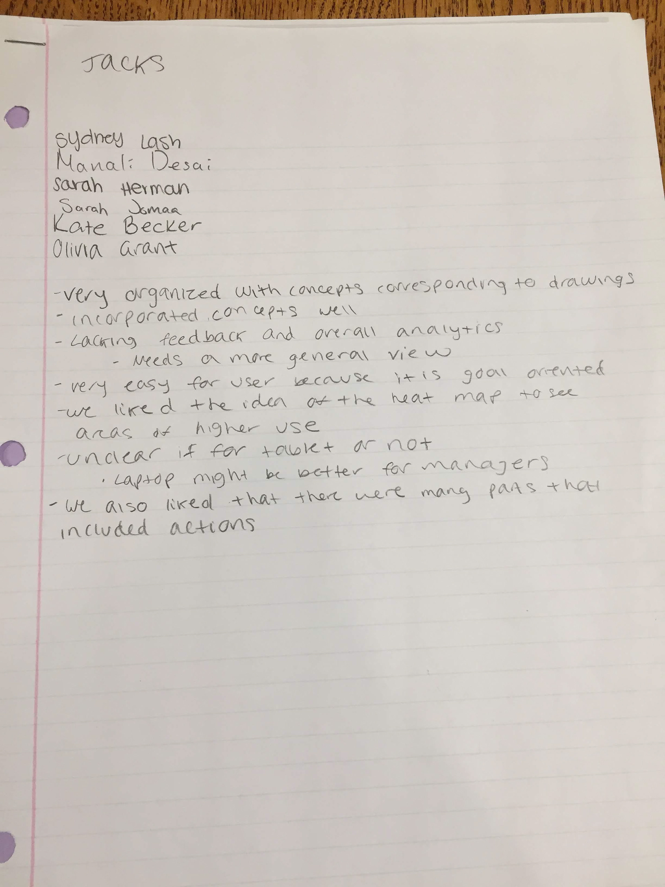
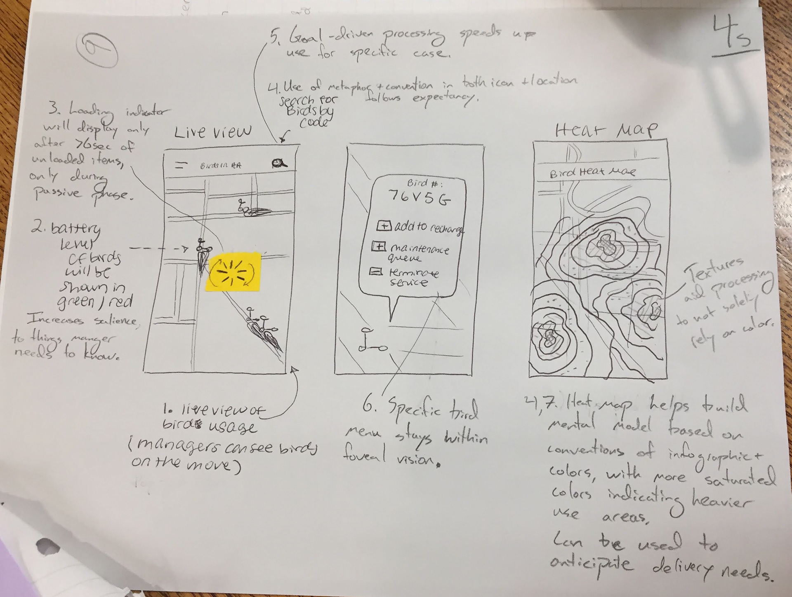
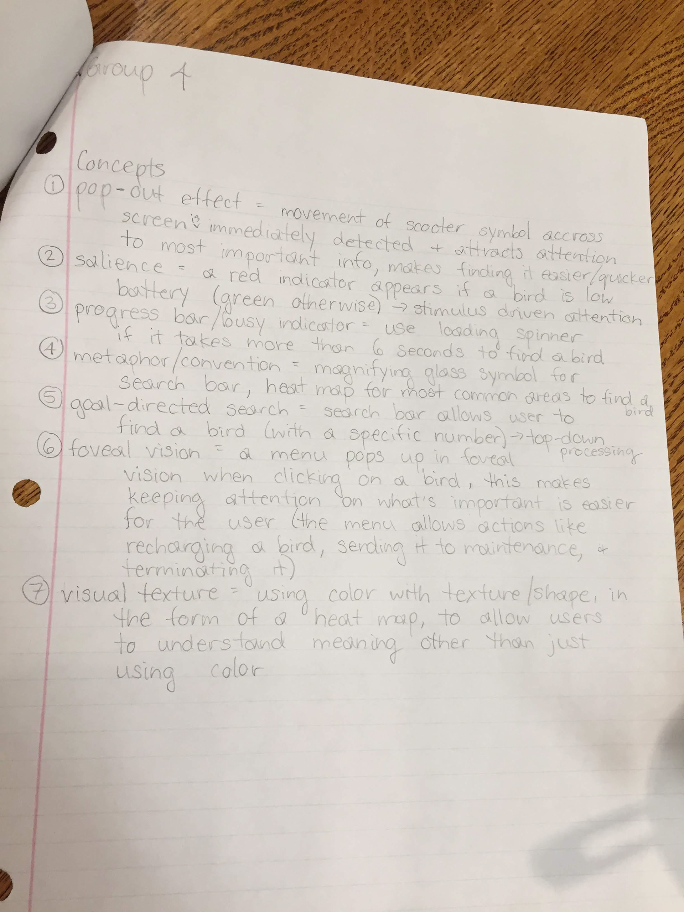
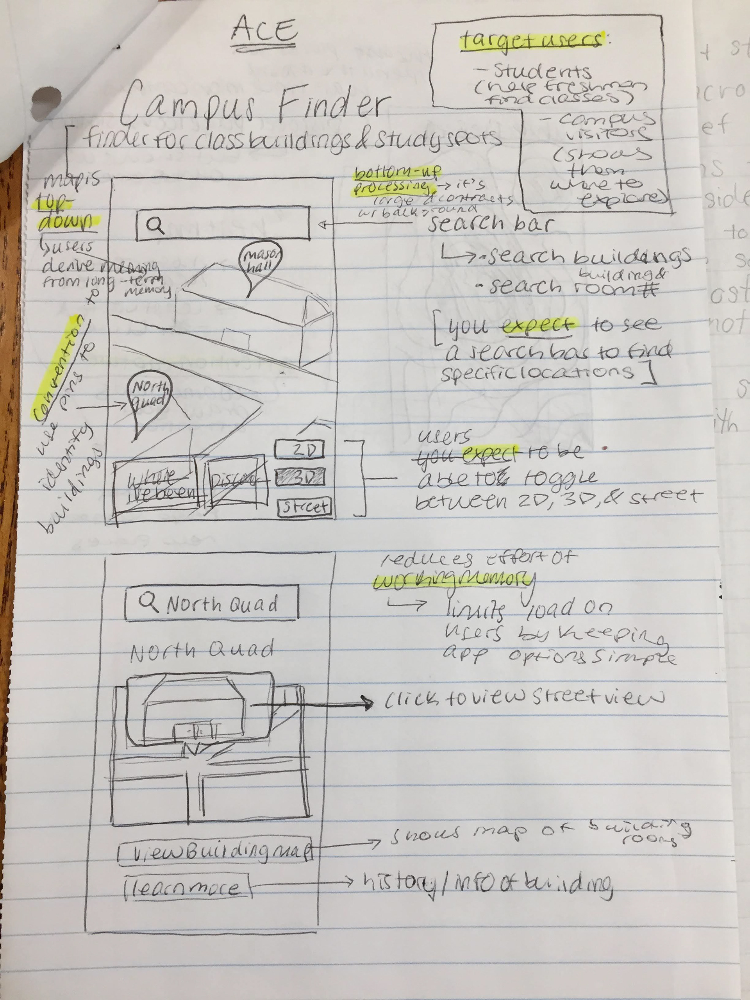
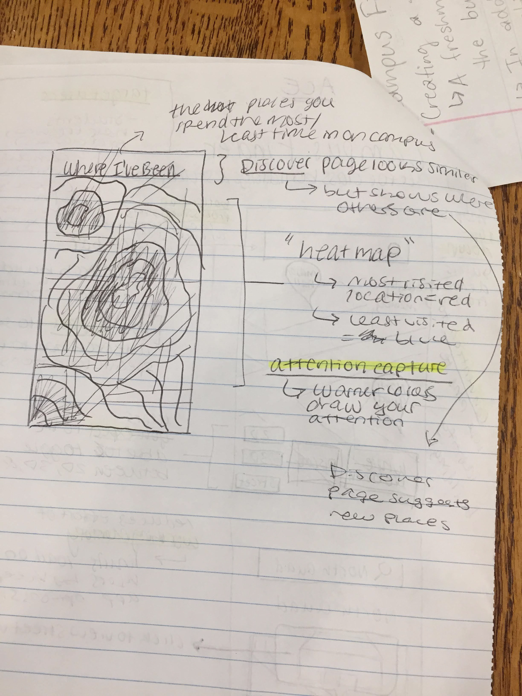
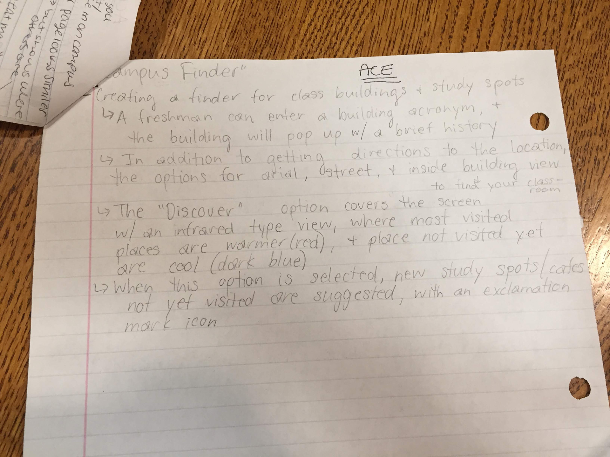